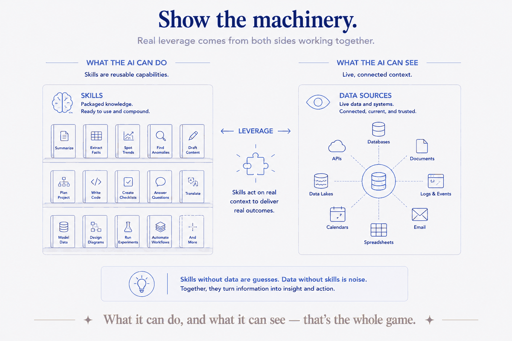
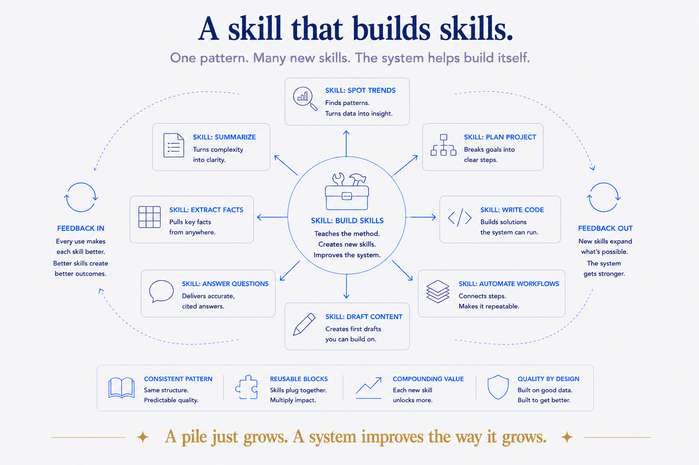

The tax nobody notices they're paying
Here's the loop most people are stuck in with AI, and they don't even feel it as a problem because it's so normal:
Open a chat. Explain the context. Explain how you want the output. Get the result. Close the chat. Next week, open a new chat — and explain all of it again. And again. Every conversation starts from nothing. You are the memory. You are the process. The AI is brilliant for ten minutes and amnesiac forever.
That's a tax. You pay it in re-explanation, every single time, and it never goes down. Worse — it doesn't compound. Nothing you taught the model last week is there this week. You're renting intelligence by the conversation and throwing away the receipts.
The fix isn't a better prompt. A better prompt is just a bigger payment on the same tax. The fix is to stop putting the process in the conversation and start putting it in a skill.
What a skill actually is (the plain version)
Strip the jargon. A skill is a procedure you've written down once, that the AI can run on command, the same way every time.
That's it. Not a prompt you paste. Not a chat you scroll back to find. A named, saved instruction that says "when I ask for this, here's exactly how you do it — the steps, the constraints, the where-things-go, the what-not-to-do." You invoke it by name, and the AI follows the procedure you already thought through, instead of improvising a new one.
If you've built a second brain, you already understand this instinctively. A skill is to the AI what a runbook is to you: the thing that means you don't re-derive "how do I process the inbox" every time — you just run the runbook. A skill is a runbook the AI executes.
Why skills, specifically, are the thing that compounds
I've written before that a structured second brain is a compounding asset — each addition makes the whole thing more valuable, like reinvested capital. Skills are the sharpest example of that, and here's the mechanism:
A prompt is spent when you use it. A skill is owned, and it accrues.
- Every skill you write is one less thing you'll ever re-explain. The tax on that procedure drops to zero, permanently.
- Skills stack. A skill can lean on your conventions, your data, your other skills. The tenth skill is easier to write than the first, because the scaffolding it stands on already exists.
- Skills improve in place. When one misfires, you fix the file — and every future run is better. You're not re-teaching; you're upgrading a part.
A pile of past chats gets heavier and less useful. A set of skills gets stronger. Same activity — telling the AI how you work — opposite curve. The fork between the two is whether you wrote it down as a reusable thing or spent it in a conversation.
Show the machinery
I'd rather show you than tell you, so here's the actual state of my system as I write this — real numbers, counted this morning, not rounded for effect.
Across my active repositories, the AI has:
- 82 skills — things it can do. Author an article. File a task into the right day-folder. Generate a diagram from metadata. Run a decision-record. Clean up a repo. Query a database in plain English. Each one is a procedure I wrote once and never have to explain again.
- 21 connected data sources — things it can see. Calendar, mail, CRM, finances, reading highlights, health, travel, messages. Not "the AI could look these up" — wired in, queryable, live.
That split — what it can do, and what it can see — is the whole game. Most people give the AI neither: it can't see their actual data, and it can't do anything the same way twice. I've spent a couple of years making both real, one skill and one source at a time. None of it was a big project. It was 82 small "I'm tired of explaining this" moments, each turned into a file.

And here's the part that surprised me: the skills aren't evenly spread. One repo has 53, because that's where the work is richest. The system grew toward the effort — I built skills where I kept paying the tax, and left the rest alone. You don't need 82. You need one, then the next one where it hurts.
The meta-move: a skill that builds skills
Once you have a few dozen skills, a new problem appears — a good one. They start to drift. One's written this way, another that way. So I did the obvious structural thing: I wrote a skill whose job is to author other skills. It knows the house pattern — how a skill should be shaped, where the approval-gates go, how to name things — and it scaffolds new ones to match.
That's the compounding curve made literal. The system now helps build itself. Every new skill is more consistent than the last, because the thing that writes them keeps the standard. This is the quiet difference between a pile and a system: a pile just grows; a system improves the way it grows.

Where this is going (and the honest caveat)
This is Part 1 of a short series. Next I'll show you how to build your own first skill — the anatomy, start to finish, generously, because the recipe is worth giving away. Then I'll map skills against prompts, plugins, and the other options, so you know when to reach for which. And I'll finish with the one that started this whole thread for me: bringing your years of AI chat history — the ChatGPT and Claude exports rotting in a downloads folder — under structure, using a skill to do the filing. That last one is the payoff, because it takes the messiest possible pile and makes it a queryable asset.
The honest caveat, so you don't over-buy the idea: skills are worth it because I have the structure underneath them — the conventions, the data sources, the vault. A skill that files something into "the right day-folder" only works because the day-folders exist and follow a rule. Skills are the doing layer; they need a structured layer to stand on. Build the structure and the skills, and the AI stops resetting to zero. Build neither, and you'll keep paying the tax forever — one re-explained conversation at a time.
The magic was never the model. It's the machinery you give it. And the machinery is just procedures you were going to explain anyway — written down once, and kept.